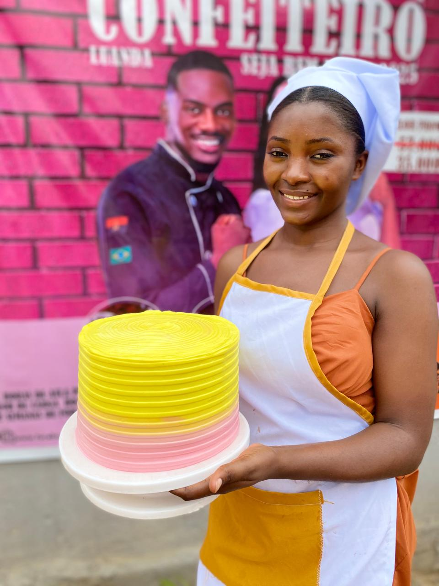
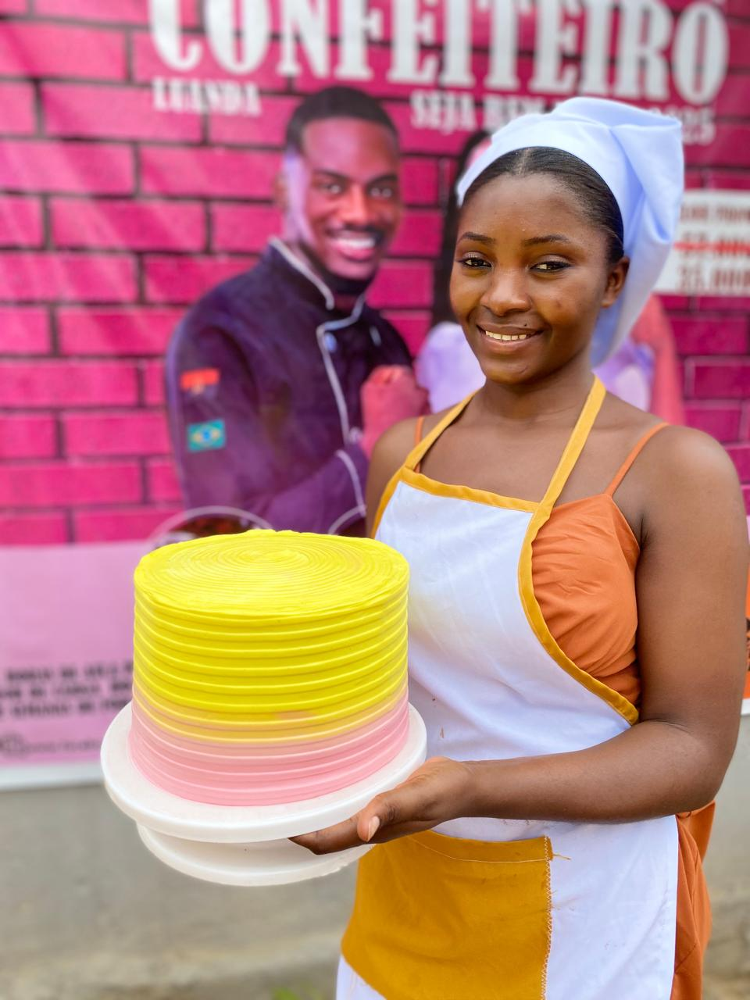

Culinária Top Chef
Descrição: Este curso é voltado para aqueles que desejam aperfeiçoar as suas habilidades culinárias e se tornarem chefs de destaque. Os alunos aprenderão técnicas sofisticadas, criatividade na cozinha e como se destacar com pratos exclusivos e inovadores.
O que você vai aprender:
- Preparação de pratos sofisticados e de autor.
- Técnicas de alta gastronomia.
- Criatividade na elaboração de cardápios e pratos exclusivos.
- A arte da gastronomia molecular.
- Gestão de cozinha profissional.
Duração: 3 meses
Preço: 67.000,00 Kz
 
